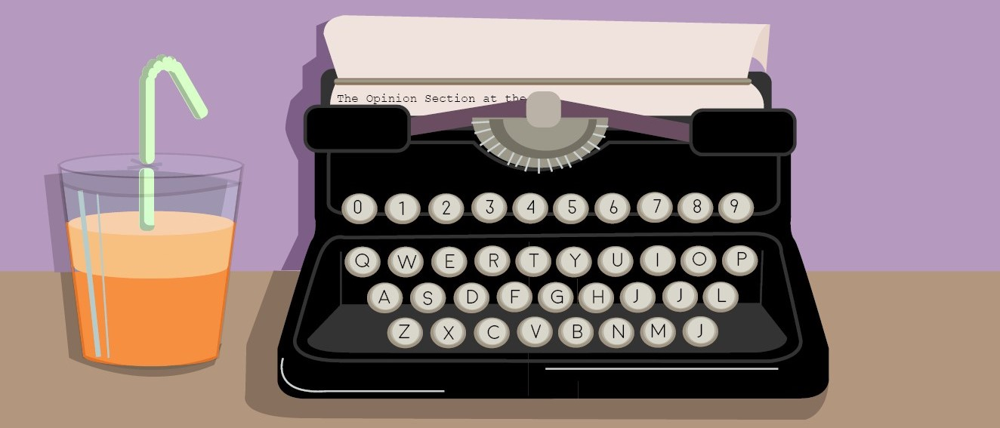

Opinion Editor.
I became adept at researching news-worthy issues and producing quality writing with tight turn arounds. Every week, within a 24 hour period, I ran an editorial meeting, wrote a 500-600 word editorial, edited the piece with upper management and pushed it to our online platform. I covered issues from Berkeley’s nuclear energy legacy to rainbow capitalism in the Bay Area during Pride month.
In addition to writing editorials, my assistant and I worked with columnists to produce weekly content that explored topics of faith, race, sexuality, and growing up. Although most columnists typically only put out weekly content, I worked with columnist Zobia Quarashi on producing a special spread on Islam in Berkeley and the greater issue of teaching religious tolerance in schools.
Please contact me if you’d like to see more opinion-specific content I’ve produced for the Daily Californian or visit my author page.